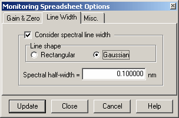

Line Width
Line Width
The Line Width option is accessible through the Options button in the lower left corner of the OptiMonitor window.

Consider spectral line width check box activates consideration of the finite spectral line width during the calculation of the monitoring spreadsheet. When this check box is selected, the following entry fields can be specified: Line shape radio buttons allow the user to select the shape of the spectral line. The spectral half-width entry field allows the user to specify the half-width of the spectral line. The Update button applies the specified values to the monitoring spreadsheet without closing the Monitoring Spreadsheet Options dialog. The Close button updates the monitoring spreadsheet with the new values and closes the Monitoring Spreadsheet Options dialog. The Cancel button closes the Monitoring Spreadsheet Options dialog and discards any entered values.